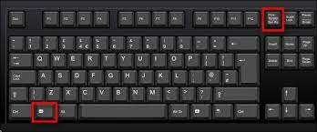

Community Orientation
Spend the next hour completing the challenges with your squad.
Before you start!
Squad Challenges: The Rules
- In order to finish, EVERYBODY in your squad must complete the challenges. Remember, we are better together.
- You should help each other! Use the squad channels in Discord.
- These challenges are best done on a computer.
Let’s see which squad can finish all the challenges the quickest! 🏁
If you have questions or need help, post a question in the #help-python Discord channel and tag @Emmy, @Okezie, @Lynet, or @Rob.
Ready?

Leaderboard
The instructors will update this as you complete challenges together.
Whenever your squad finishes a challenge, one member should post a message in the “FPWP Community Orientation Leaderboard” thread in the #general channel with:
- your squad number
- the challenge that you completed
Like this:
Hi, Squad 42 has completed challenge 1. Here's the link to our project: [link]
We will update the leaderboard based on the information that is posted in the thread.
Challenge 0: All Onboard 🚀
Instructions: Greet your teammates in Discord.
- Introduce yourself in your squad channel.
- Include your name, where you're based, and what interests you about the course.
Completion criteria:
- All squad members have posted a greeting (e.g. “Hi, I’m [name] from [country]”) in the squad text channel in Discord.
To see the list of your squad members, go to your squad text channel, and look at the Member List panel on the right of the screen. You will see who is online in your squad.
- All squad members will have their names in the color grey.
- Community managers, Instructors, and Kibo Staff will show in other colors.

Challenge 1: Squad Info Program 👩🏿💻
Instructions: Collaborate to write a program in Replit that prints info about your squad.
All squad members should join your squad voice channel, so that you can discuss what you want to include in your program.
Select one person to create a repl. That person should click the +Invite button and share the link in Discord so that the the rest of the squad can join and work together.
Work together as a squad to write your program in your repl.
The program should use print to display the following information:
- Squad information:
- Squad number
- One thing that everyone in your squad has in common
- How your squad members want to help each other learn
- For each squad member:
- Name
- One sentence biography
- Why you are learning python
- One skill that you have that someone else in your squad finds useful/wishes they had
When you are finished with the program, share a link to your Repl in Discord in the #random channel
Sample: finished program from the Kibo Team
https://replit.com/@kibocurriculum/Kibo-Orientation-Squad-Info-Example#main.py
Completion criteria: All squad members info is printed in the program. The squad Repl link is shared in the #random channel in Discord.
Challenge 2: Thread It 🪡🧵
Instructions: Use the #help-python channel in Discord to start a question thread
Watch the clip below to learn how to create a thread in Discord.
- Open the #help-python channel in Discord
- Post one question you have about Python OR respond to someone else’s question in their thread.
If you ask a question:
- Give your thread a name that summarizes the topic of your question
- Write the details of your question in the first message
- If someone responds to your question, you can respond back to them!
If you respond to a question:
- Respond in the thread, so that the channel doesn't get too confusing.
Completion criteria: All squad members have posted a question or answered/commented on a question in the #help-python channel.
Challenge 3: Screenshots and URLs
Instructions: Help each of your teammates share a screenshot and a URL in your squad channel.
When you ask for help on a coding assignment, you need to share information that another student or an instructor can use to help you figure out what's going on.
Two of the best tools for sharing that are
- A screenshot of the code
- A URL of the assignment
Everyone in your squad should complete these steps individually:
- Go to your version of the Decrypt Me challenge in Replit.
- In your squad channel, share the url to your work.
- Take a screenshot of your code
- Share the screenshot in your squad channel
Here’s how to take a screenshot on Windows, Mac, and Chromebook:
Windows
Press the Windows key + Print Screen (PrtScn) key.

The screenshot will be saved to the Pictures > Screenshots folder. You can drag and drop the picture to Discord, or click the (+) button and click "Upload a File".
Mac
Press the Command key + Shift key + 4
The cursor will turn into a +, and you can select the portion of the screen you'd like to capture. When you release the mouse, the screenshot will be taken.
Screenshots will save to your desktop, and show as a thumbnail. You can drag and drop the picture to Discord, or click the (+) button and click "Upload a File".
Chromebook
Press Shift + Ctrl + Show windows.
(Or, if your Chromebook has it, press the Screenshot key)
In the menu at the bottom, select Screenshot.
Select an option:
- Take a full screen screenshot
- Take a partial screenshot
- Take a window screenshot
Recordings and screenshots get saved to your “Downloads” folder. You can drag and drop the picture to Discord, or click the (+) button and click "Upload a File".
⚠️ DO NOT share a mobile phone picture of your laptop screen. It's difficult to read the text on the screen from a mobile phone picture.
Completion criteria: All squad members have shared a url and screenshot of their Decrypt Me challenge in the squad text channel.
Challenge 4: Feedback Is a Gift 🎁
Instructions: Once you have completed all the other challenges, submit your feedback on the Orientation session by opening the toggle below, and completing the Google form.
Open the toggle to submit your feedback on the Orientation
Completion criteria: All squad members have submitted their feedback on Orientation.
The End of Orientation
You’re done with orientation and ready to begin class. If you want to keep exploring Discord and hanging out, check out the Music Lounge, the #random channel, or the #games channel. Or, get started on the week 1 lessons.
Who You Are (Word Cloud)
These are the words you used to describe yourselves. What an awesome group!

Bonus: DJ 🎧
Instructions: Go to the Music Lounge voice channel in Discord, and use the #music-request channel to queue up a song to play.
Feel free to hang out and hear what else is playing in the Music Lounge.